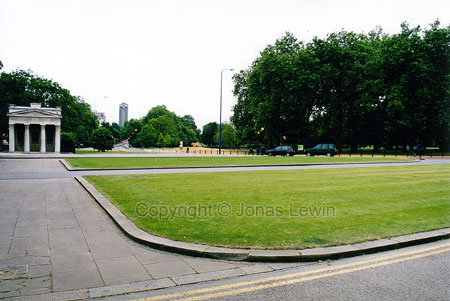
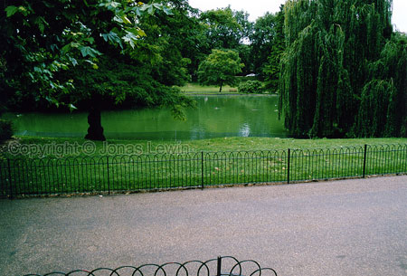

And
the ever so famous Buckingham Palace.
And
the ever so famous Buckingham Palace.A large grey boring building. It's
the people inside that are interesting. The British royalty.
London
have a lot of green parks. This is Buckingham Palace Gardens.
And
here's Hyde park. Quite a large park.
Lambeth
Bridge. I guess it's the river Thames, but that's just a guess.
All in all, I find London quite boring, and quite expensive.
The food is terrible, as in the rest of England.
Piccadilly
Circus.
Pernilla Wahlgren sang a song about this place. The song is a lot better
than the place.
St
James Park.
A
tunnel under Wellington Arch. Nicely decorated.
The
London Eye and Westminster Bridge.